MedTech Skills Overview
BME254L - Spring 2026
MedTech Skills Overview
Why skills?
Do not want design ideas to be limited by what you “think” you can actually make!
As the engineer, you bring both solution creativity and execution to the table.
Most of the engineering curriculum has been ``book heavy’’ to date.
Functional Decomposition
CAD/EDA (simulation, PCB layout)
Fabrication & Integration (3D printing, soldering, fastening, mounting)
Verification & Validation: testing to specifications
MCU Firmware Development (C,
git)
CAD (Computer Aided Design)
Why CAD?
Formally capture 2D projection sketches \(\rightarrow\) 3D parts.
Dimension consistency checks.
Assemble multiple parts to check fit, interfaces and simulate stress/strain/movement.
Translate to physical realization (e.g., 3D print, mil).
General technical drawings for manufacturing.
Capture design history, while facilitating iteration / change.
Onshape
We will be using Onshape, a cloud-based CAD package with a similar workflow to SolidWorks.
You will be automatically registered to join Duke’s Onshape team.
Tutorials are available through https://learn.onshape.com.
Part Design
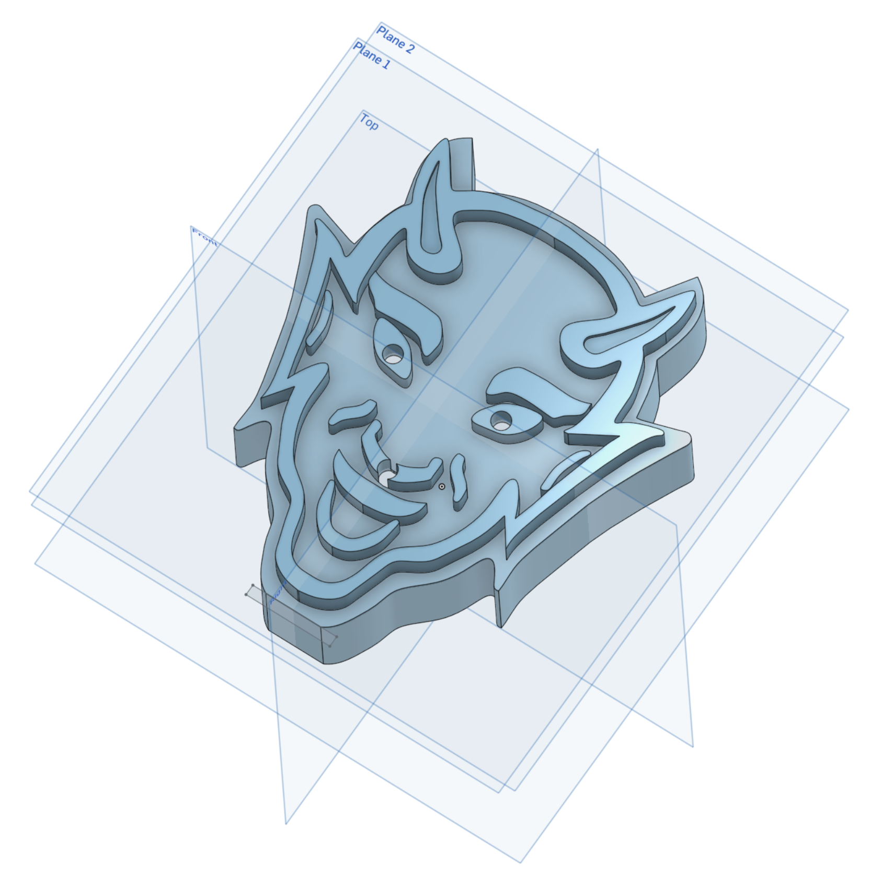
Mechanical Drawings
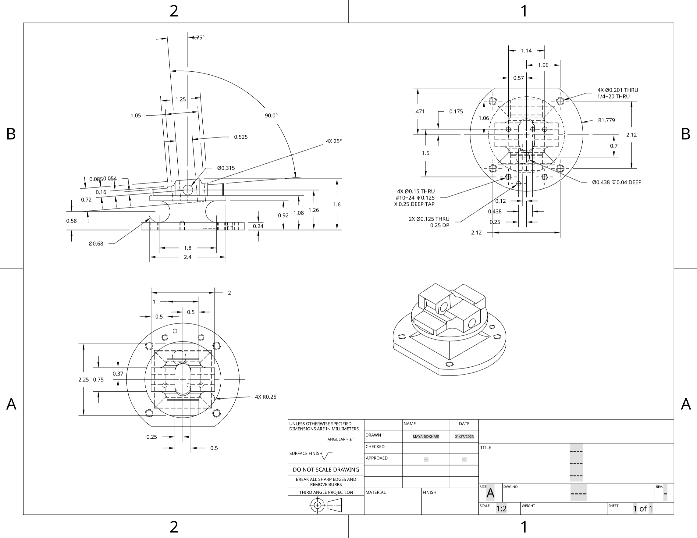
Design Example: mHealth Tympanometer
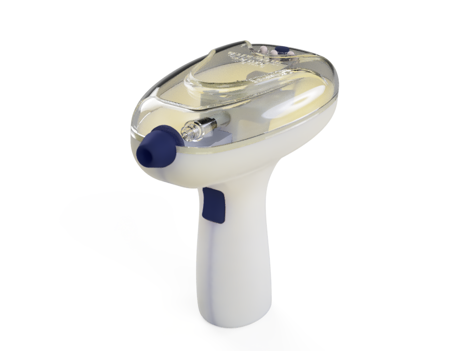
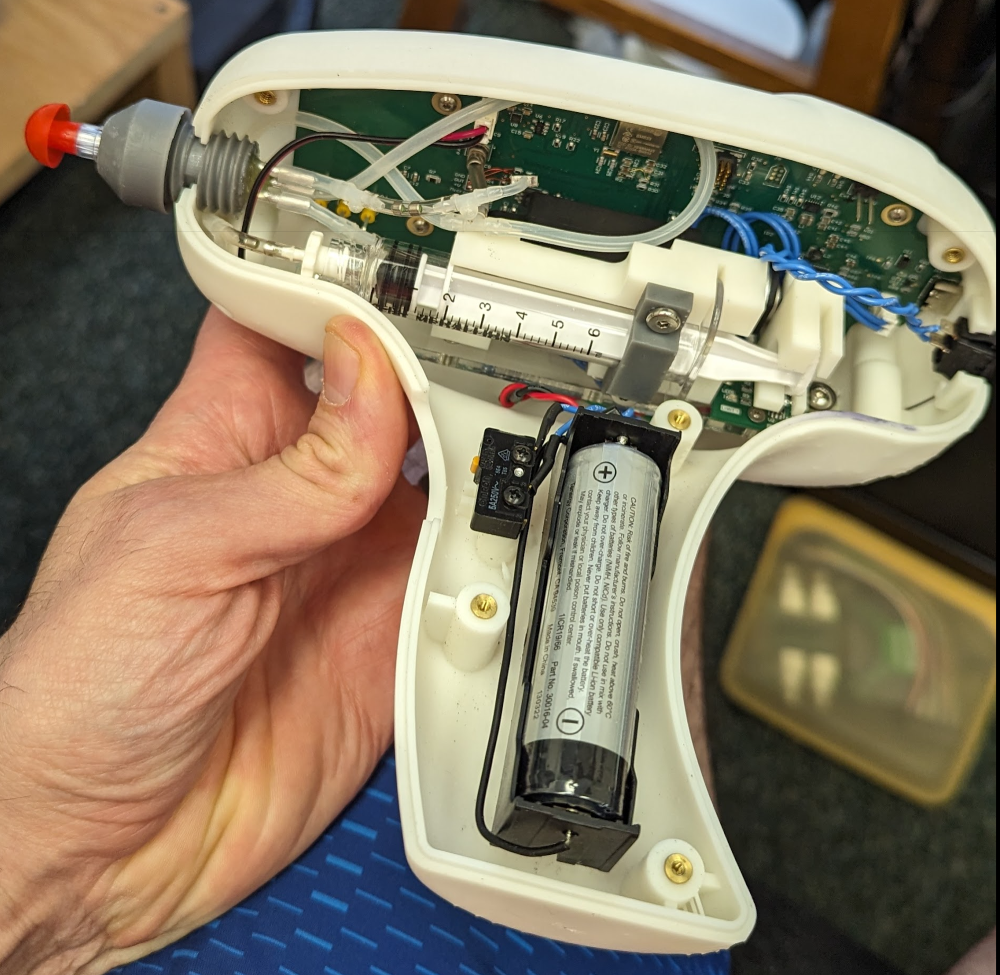
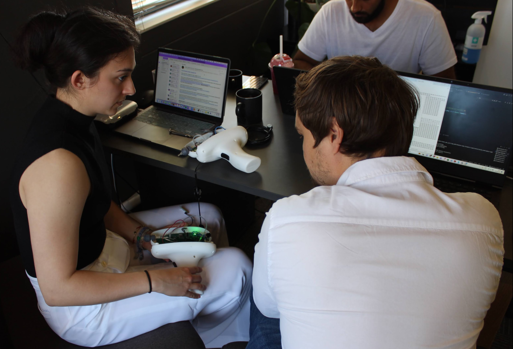
EDA: Electronics Design Automation
Why EDA?
Formalize circuit schematics.
Validate circuit behavior (design rules and SPICE simulations).
Convert circuit to printed circuit board (more space efficient and permanent than a breadboard).
Capture design history and facilitate rapid iteration.
Generate 3D “parts” to integrate with CAD.
KiCad
A completely open-source alternative to Eagle.
Just as capable as Altium Designer (to a point); similar workflow.
Integrated SPICE simulator.
Schematic Capture
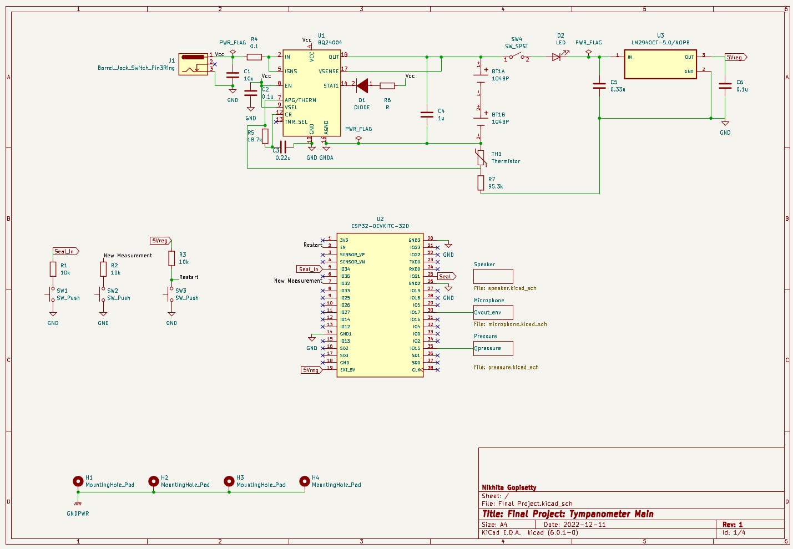
PCB Layout
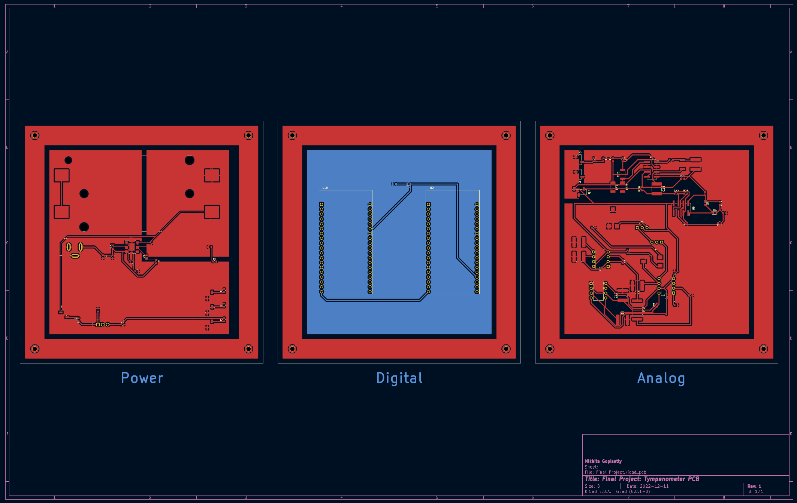
PCB 3D Model
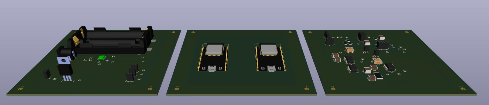
Version Control Software
Why Version Control?
Preserve software (project) development history
Collaboration
Continuous Integration / Deployment
Testing
Maintaining multiple released versions
Required for IEC 62304 (Medical Software), FDA V&V (510k clearance)
Git
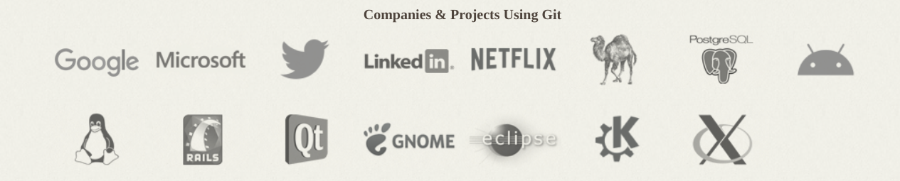
Firmware Development
Why Firmware?
While many things can be done in discrete electronics, microcontrollers and microprocessors (and SoCs) are becoming inexpensive and ubiquitous.
“Knowing Arduino” is not an eye-catching skill on a resume; but firmware development is!
Firmware isn’t “software”…
Firmware is a special kind of software that is designed to interact with hardware.
Firmware is often written in C, but can be written in other languages.
Firmware is highly resource constrained
Software is often written in Python, Java, C++, etc.
Software is often written to be run on a general-purpose computer (laptop, desktop, server, etc.), that typically is not resource constrained.
User Interface
Web Server
Database
Data Processing / Analytics
Medical Devices
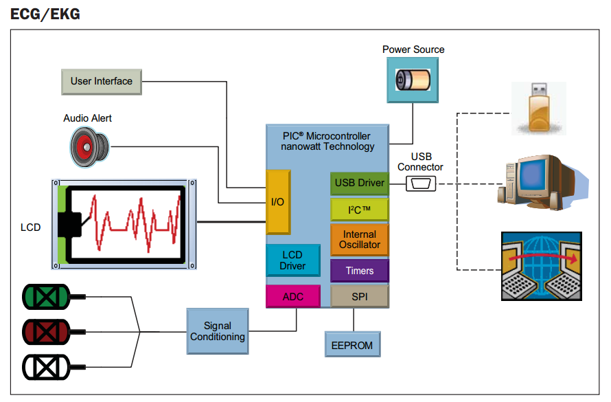
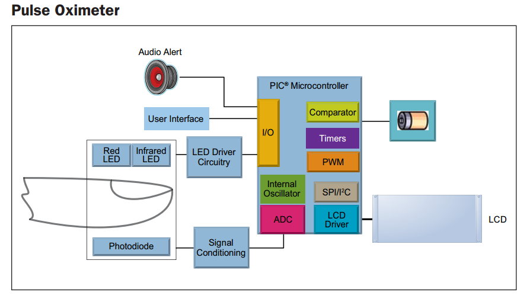
Arduino-Framework / PlatformIO
We will use PlatformIO to develop firmware for our projects using Visual Studio Code as our IDE.
We will use the Arduino framework (in contrast to something like Zephyr RTOS) to develop firmware for our projects.
Learn robust, modular firmware development practices.